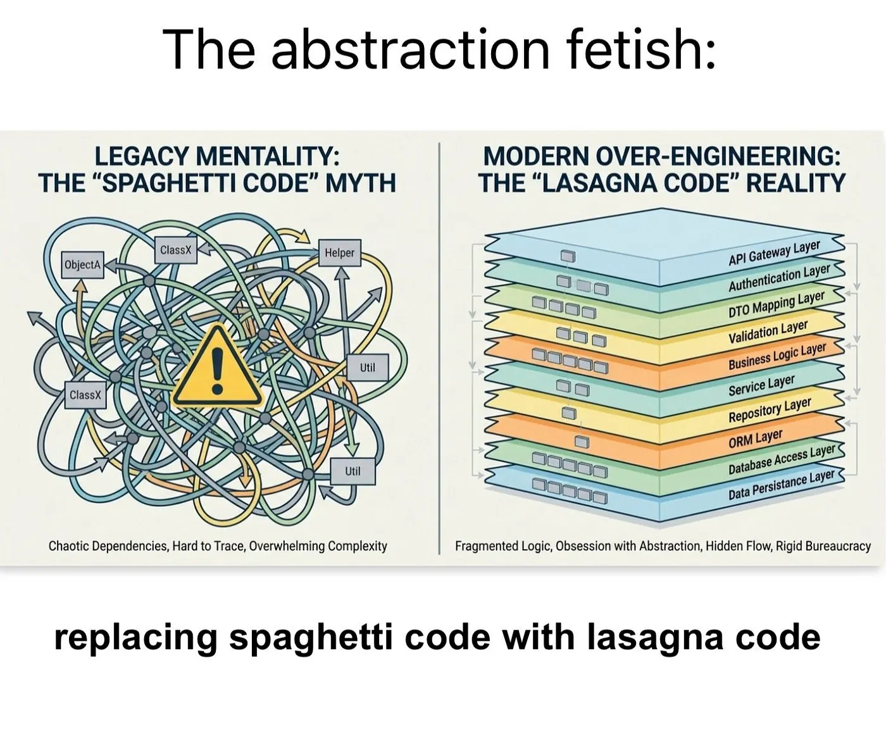

Effect TS Introduction
Audience
✅ If you are new to:
- Functional Programming
- Effect System
- New to
effect-ts
❌ If you know
- ZIO/Cats Effect
- Haskell or a similar FP language
Goals
- Core Concepts
- Core Components
- Read/Review
effect-tsCode - Write Basic
effect-tsCode
When To Use
Whenever TypeScript is used
Why

Improved Type System and More
- Computations with Side Effects
- Referential Transparency Restored
- Computations as Values
- Execution Control
- Consistent Patterns
- Learn once, Use
AlmostEverywhere - Schema Validation
- Not Discussed Here
- Easier Common Scenarios
- Concurrency, Resource Management, Missing Values, Error Handling, Dependencies…
Side-effectful function
❌ Calling this is not equivalent to its value/type
💔 Loss of Referential Transparency
function log(message: string): void {
console.log(`Amazing log ${message}`);
}
Side-effectful function with Effect
- ✅ Referential Transparency Restored.
- 🆕 Return Type
syncfor SAFE Synchronous Computation- Notice the Lambda Function Parameter
import { Effect } from 'effect';
function log(message: string): Effect.Effect<void> {
return Effect.sync(() => console.log(`Amazing log ${message}`));
}
Computation As Values - Execution Control
const program : Effect.Effect<void> =
Effect.sync(() => console.log(`Amazing Program`));
// Run synchronously
Effect.runSync(program);
// Run asynchronously
Effect.runPromise(program);
// Repeat the action 2 additional times after the first execution
const programRepeated = Effect.repeatN(program, 2);
Effect.runPromise(programRepeated);
Composition
Pipe - Pure Composition
no side effects; primitive type computations
┌───────┐ ┌───────┐ ┌───────┐ ┌───────┐ ┌───────┐ ┌────────┐
│ input │───►│ func1 │───►│ func2 │───►│ ... │───►│ funcN │───►│ result │
└───────┘ └───────┘ └───────┘ └───────┘ └───────┘ └────────┘
import { pipe } from "effect"
// Define simple arithmetic operations
const increment = (x: number) => x + 1
const double = (x: number) => x * 2
const subtractTen = (x: number) => x - 10
// Sequentially apply these operations using `pipe`
const result = pipe(5, increment, double, subtractTen)
console.log(result)
// Output: 2
Map - Pure Computation Over "Context"
If you want to transform the result of the computation.
Similar to Promise.then, but only with pure computations
// No side effects inside the "then"
fetch("https://example.org/products.json")
.then((response) => response.status);
Example Option
import { Option, pipe } from "effect";
const mappedOption: Option.Option<number> = pipe(
Option.some(42),
Option.map((x: number) => x * 2),
);
console.log(mappedOption);
// { _id: 'Option', _tag: 'Some', value: 84 }
console.log(Option.getOrElse(mappedOption, () => 0));
// 84
Example Effect
import { Effect, pipe } from "effect";
const mappedEffect: Effect.Effect<string> = pipe(
Effect.succeed("data"),
Effect.map((x: string) => `Awesome ${x}`),
);
// Awesome data
console.log(Effect.runSync(mappedEffect));
andThen
I don't care about your result
After that effect, do this
import { Effect, pipe } from "effect";
// Notice the return type!
const mappedEffect: Effect.Effect<void> = pipe(
Effect.succeed("data"),
// works on pure functions as well. Multiple overloads
Effect.andThen(() => Effect.sync(() => console.log(`Finished`))),
);
// Prints: Finished
// Returns: void
console.log(Effect.runSync(mappedEffect));
zipRight (and zipLeft)
zipRight Very similar to Promise.then
You can decide which value to keep and what to discard. Both Effects are performed
import { Effect, pipe } from "effect";
const mappedEffect: Effect.Effect<void> = pipe(
Effect.succeed("data"),
Effect.zipRight(Effect.sync(() => console.log(`Finished`))),
);
console.log(Effect.runSync(mappedEffect));
Tap
- Run a side-effect
- Value flowing through
pipestays available for the next step
import { Effect, pipe } from "effect";
const traced: Effect.Effect<string> = pipe(
Effect.succeed("data"),
Effect.tap(() => Effect.sync(() => console.log("In progress"))),
Effect.map((data: string) => `awesome ${data}`),
);
// In progress — log from tap runs first
// awesome data — final mapped value
console.log(Effect.runSync(traced));
FlatMap - Chain of Effects
Promise.then((v) => AnotherPromise)
import { Effect, pipe } from "effect";
const mappedEffect: Effect.Effect<void> = pipe(
Effect.succeed("data"),
Effect.tap(() => Effect.sync(() => console.log(`In progress`))),
Effect.flatMap((data: string) =>
Effect.sync(() => console.log(`awesome ${data}`)),
),
);
// Prints: In progress → awesome data
// Returns: void
Composition At Scale
Back To Callback Hell!
import { Effect } from "effect"
const program =
Effect.succeed(1).pipe(
Effect.flatMap(n1 =>
Effect.succeed(n1 + 1)
),
Effect.flatMap(n2 =>
Effect.succeed(n2 * 2)
),
// nested pipeline starts here
Effect.flatMap(n3 =>
Effect.succeed(n3).pipe(
Effect.flatMap(x =>
Effect.succeed(x + 10)
),
Effect.flatMap(x =>
Effect.succeed(x * 3)
),
Effect.flatMap(x =>
Effect.succeed(x - 5)
)
)
),
Effect.flatMap(n4 =>
Effect.succeed(n4 / 2)
),
Effect.flatMap(n5 =>
Effect.succeed(n5 + 7)
),
Effect.flatMap(n6 =>
Effect.succeed(`Final result: ${n6}`)
)
)
Does This Ring a Bell?
connectToDatabase()
.then((database) =>
getUser(database)
.then((user) =>
getUserSettings(database)
.then((settings) =>
enableAccess(user, settings)
),
),
);
Problem Already Solved
Scala for comprehension
for {
_ <- logger.logInfo("Access DB")
database <- connectToDatabase()
_ <- logger.logInfo("Get Users")
user <- getUser(database)
_ <- logger.logInfo("Get User Settings")
settings <- getUserSettings(database)
_ <- logger.logInfo(s"Enable Access to $user")
result <- enableAccess(user, settings)
} yield result
Haskell do blocks
do
logInfo logger "Access DB"
database <- connectToDatabase
logInfo logger "Get Users"
user <- getUser database
logInfo logger "Get User Settings"
settings <- getUserSettings database
logInfo logger $ "Enable Access to " ++ show user
return (enableAccess user settings)
Async/Await
async function run() {
logger.logInfo('Access DB');
const database = await connectToDatabase();
logger.logInfo('Get Users');
const user = await getUser(database);
logger.logInfo('Get User Settings');
const settings = await getUserSettings(database);
logger.logInfo(`Enable Access to ${user}`);
const result = await enableAccess(user, settings);
return result;
}
Effect.gen and yield*
// Each step is an effect
Effect.gen(function* () {
yield* logger.logInfo('Access DB');
const database = yield* connectToDatabase();
yield* logger.logInfo('Get Users');
const user = yield* getUser(database);
yield* logger.logInfo('Get User Settings');
const settings = yield* getUserSettings(database);
yield* logger.logInfo(`Enable Access to ${user}`);
const result = yield* enableAccess(user, settings);
return result;
})
Simulating do notation
Very similar to the generators
It's Just the Beginning
allforEachwhen-unlesswhenEffect-unlessEffecttapError-mapErrorboth…
Effect
The core datatype for impure computations and beyond
┌─── Represents the success type
│ ┌─── Represents the error type
│ │ ┌─── Represents required dependencies
▼ ▼ ▼
Effect<Success, Error, Requirements>
Dependencies Channel
- Declare Your Dependencies
- Consider Them Satisfied
- Use Them
Provide Them Later
┌─── Represents required dependencies ▼ Effect<Success, Error, Requirements>
Why Does This Work? Laziness!!!
- Declare your effects
- Compose and prepare them
Run Everything Everywhere All at Once
at the end of the world
Dependencies Declaration, Retrieval and Usage
Declare a Random class dependency
Usually a class/interface
- It is fetched from the context and used
- Where does it come from? 🤷
const program: Effect<void, never, Random> = Effect.gen(function* () {
const random = yield* Random
const randomNumber = yield* random.next
console.log(`random number: ${randomNumber}`)
})
Dependencies Fulfilment
// Providing the implementation
//
// ┌─── Effect<void, never, never>
// ▼
const runnable = Effect.provideService(program, Random, {
next: Effect.sync(() => Math.random()),
});
// Run successfully
Effect.runPromise(runnable);
/*
Example Output:
random number: 0.8241872233134417
*/
Benefits
- Testability
- Can Swap With Mocks
- Reasoning
- without implementation details
- Separation of Concerns
Error Handling Channel
┌─── Represents the error type
│
▼
Effect<Success, Error, Requirements>
The ones we Expect
Expected Errors
Declare "Tagged" Expected Errors
Tag is used throughout Effect to identify components
// Define a custom error type using Data.TaggedError
class HttpError extends Data.TaggedError("HttpError")<{
cause: unknown;
}> {}
Returning Tagged Errors
// ┌─── Effect<string, HttpError, never>
// ▼
const program = Effect.gen(function* () {
// Generate a random number between 0 and 1
const n = yield* Random.next
// Simulate an HTTP error
if (n < 0.5) {
return yield* Effect.fail(new HttpError())
}
return "some result"
})
Notes
- Multiple Errors
Effect<string, HttpError | ValidationError, never>
- Short Circuiting
- Stop execution upon encountering the first error.
- (no term)
- Collecting errors is possible with other abstractions
Defects
Errors thrown and unexpected:
- Not visible at type system
- Part of the Effect type semantic
Handlers
You can decide what and when to handle.
You are forced to handle expected errors
You should handle defects
Expected Errors
Use the previous error tag to handle it/them
// ┌─── Effect<string, never, never>
// ▼
const recovered2 = program.pipe(
Effect.catchTags({
HttpError: (_HttpError) => Effect.succeed(`Recovering from HttpError`),
ValidationError: (_ValidationError) =>
Effect.succeed(`Recovering from ValidationError`),
}),
);
Defects
Store various details such as:
- Unexpected errors or defects
- Stack and execution traces
- Reasons for fiber interruptions
// Recover from all errors by examining the cause
const recovered = program.pipe(
Effect.catchAllCause((cause) =>
Cause.isFailType(cause)
? Effect.succeed("Recovered from a regular error")
: Effect.succeed("Recovered from a defect")
)
)
- Datatype to signal the termination:
SuccessorFailure - The wrapped error being a
Cause - Describes how an Effect terminates
A way to move the error to the value
Effect<A, E, R> -> Effect<Exit<A, E>, never, R>
const program = Effect.catchAllDefect(riskyTask, (defect) => {
if (Cause.isRuntimeException(defect)) {
return Console.log(
`RuntimeException defect caught: ${defect.message}`
)
}
return Console.log("Unknown defect caught.")
})
catchAll
General handler getting a error : unknown handler
Hard to know what that error could be
// ┌─── Effect<string, never, never>
// ▼
const recovered = program.pipe(
Effect.catchAll((error) =>
Effect.succeed(`Recovering from ${error._tag}`)
)
)
Popular Convenient Data Types
Either
- Pure error handling type
- Similar to
Exitbut for any type - Composed of:
Either.Left(error)Either.Right(value)
- Has all composition patterns seen before
- Use when your computation:
- Has no side-effects
- Can fail
Match
- For FP coders
worsePattern matching- For TypeScript developers
- Better
switch
Value Match
// Simulated dynamic input that can be a string or a number
const input: string | number = "some input"
// ┌─── string
// ▼
const result = Match.value(input).pipe(
// Match if the value is a number
Match.when(Match.number, (n) => `number: ${n}`),
// Match if the value is a string
Match.when(Match.string, (s) => `string: ${s}`),
// Ensure all possible cases are covered
Match.exhaustive
)
Several Possible Conditions
// Match when age is greater than 18
Match.when({ age: (age) => age > 18 }, (user) => `Age: ${user.age}`),
// Match when age is exactly 18
Match.when({ age: 18 }, () => "You can vote"),
// Match any value except "hi", returning "ok"
Match.not("hi", () => "ok"),
// Match either "fetch" or "success"
Match.tag("fetch", "success", () => `Ok!`),
// Fallback case for when the value is "hi"
Match.orElse(() => "fallback")
Type Match
// Create a matcher for values that are either strings or numbers
//
// ┌─── (u: string | number) => string
// ▼
const match = Match.type<string | number>().pipe(
// Match when the value is a number
Match.when(Match.number, (n) => `number: ${n}`),
// Match when the value is a string
Match.when(Match.string, (s) => `string: ${s}`),
// Ensure all possible cases are handled
Match.exhaustive
)
console.log(match(0))
// Output: "number: 0"
withReturnType
Highly Recommended
Ensures the match will return that type
const match = Match.type<{ a: number } | { b: string }>().pipe(
// Ensure all branches return a string
Match.withReturnType<string>(),
// ❌ Type error: returns a number
Match.when({ a: Match.number }, (_) => _.a),
// Error ts(2322) ― Type 'number' is not assignable to type 'string'.
// ✅ Correct: returns a string
Match.when({ b: Match.string }, (_) => _.b),
Match.exhaustive
)
Exhaustive
Highly Recommended
Ensures all possible cases are covered
// Create a matcher for string or number values
const match = Match.type<string | number>().pipe(
// Match when the value is a number
Match.when(Match.number, (n) => `number: ${n}`),
// Mark the match as exhaustive, ensuring all cases are handled
// TypeScript will throw an error if any case is missing
Match.exhaustive
)
// Fail at compile time, string is not handled.
Stream
- Known Composition Patterns
- Integrates with the
EffectType - Error Channel
- Node Streams Interoperability
- Rich API: Grouping - Partitioning - Interleaving - Interspersing - Scheduling - Debouncing - Throttling …
Retry / Scheduler / Timeout Example
Before

After

Architecture

Main Components
| Concept | Description |
|---|---|
| service | A reusable component providing specific functionality |
| tag | A unique identifier representing a service, allowing Effect to locate and use it. |
| context | A collection storing services |
| layer | An abstraction for constructing services |
Services
Define A Service
import { Effect, Context } from "effect"
// Declaring a tag for a service that generates random numbers
class Random extends Context.Tag("MyRandomService")<
Random,
{ readonly next: Effect.Effect<number> }
>() {}
Provide Implementation
export const RandomLive = Effect.succeed({
next: Effect.sync(() => Math.random())
})
Using The Service
// ┌─── Effect<void, never, Random>
// ▼
const program = Effect.gen(function* () {
const random = yield* Random
const randomNumber = yield* random.next
console.log(`random number: ${randomNumber}`)
})
Providing Service
- Simple Way
- Does Not Scale
- Useful for Simple Cases
- You want to provide ONE dependency on the spot
const runnable = Effect.provideService(program, Random, {
next: Effect.sync(() => Math.random())
});
Effect.runPromise(runnable)
Effect.Service
- Another Way to Create Services
- Provide definition, implementation and dependencies in one place
- Automatically Generates Layers
Built-in Services
- No need to explicitly provide their implementations
- No setup
- Overrideable
type DefaultServices =
Clock
| ConfigProvider
| Console
| Random
| Tracer
Layers
When the creation:
- Can Be Effectful
- Can fail
Can have requirements
┌─── The service to be created │ ┌─── The possible error │ │ ┌─── The required dependencies ▼ ▼ ▼ Layer<RequirementsOut, Error, RequirementsIn>
Creating Layer
const randomLayer = Layer.effect(
Logger,
Effect.gen(function* () {
const config = yield* Config
return {
next: Effect.gen(function* () {
const seed = yield* config.getSeed();
return Math.random(seed);
})
}
});
Composing Layer
const AppConfigLive = Layer.merge(ConfigLive, LoggerLive);
const MainLive = DatabaseLive.pipe(
Layer.provide(AppConfigLive),
Layer.provide(ConfigLive),
);
Providing Layer
// I give you the whole structure
// You'll select the services you need based on the tags
// They will be created for you following layer logic
const runnable = Effect.provide(program, MainLive)
Effect.runPromise(runnable).then(console.log)
Context
Motivation
- You want a repository where all your services are
- Grab what you want
- Use it
Usual Service Setup
type Context = {
databaseService: DatabaseService
loggingService: LoggingService
}
const processData = (data: Data, context: Context) => {
// Using multiple services from the context
}
Problem
The environment must be correctly set up with all necessary services first
- Tightly coupled code
- Functional composition and testing more difficult
- May just need one service out of 100
Solution
Conceptually: type Context = Map<Tag, Service>
Remember laziness
Extract Service Type
type RandomShape = Context.Tag.Service<Random>
/*
This is equivalent to:
type RandomShape = {
readonly next: Effect.Effect<number>;
}
*/
Build and use Context
// Combine service implementations into a single 'Context'
const context = Context.empty().pipe(
Context.add(Random, { next: Effect.sync(() => Math.random()) }),
Context.add(Logger, {
log: (message) => Effect.sync(() => console.log(message))
})
)
// Provide the entire context
const runnable = Effect.provide(program, context)
Ecosystem & More
- Adaptable to different platforms:
node,bun,browser - Http:
client,routes,OpenApi,RPC - Schema Validation
@effect/opentelemetry@effect/cli- Configuration
- Memoization / Cache
Downsides
Syntax / Verbosity
Especially over simple computations
const vanillaName = user.name ?? 'John';
const vanillaSurname = user.surname ?? 'Doe';
const vanillaResult = `${vanillaName} ${vanillaSurname}`;
const optionResult =
Option.zipWith(
user.name,
user.surname,
(name, surname) => `${name} ${surname}`
).pipe(
Option.getOrElse(() => 'John Doe')
)
Type Gymnastics
Complex Types → Complex Compilation Errors
Beware of AI
Probably fixable with some good prompts/skills
Still good to solve common compilation problems
Example 1 - Useless Steps
pipe(
...
Stream.zipWithIndex,
// Stream.map(
// ([record, rowIndex]: [Record<string, string>, number]): CsvRow =>
// [record, rowIndex],
// ),
...
)
Example 2 - Love for Option.Match
- Rewrite to
Option.matchunnecessary ElementNotFounderror lost
Example 3 - Shortcuts
Please add returns types to functions
...
// eslint-disable-next-line @typescript-eslint/explicit-module-boundary-types -- Effect Layer inference
export function fooLayer() {
...
}